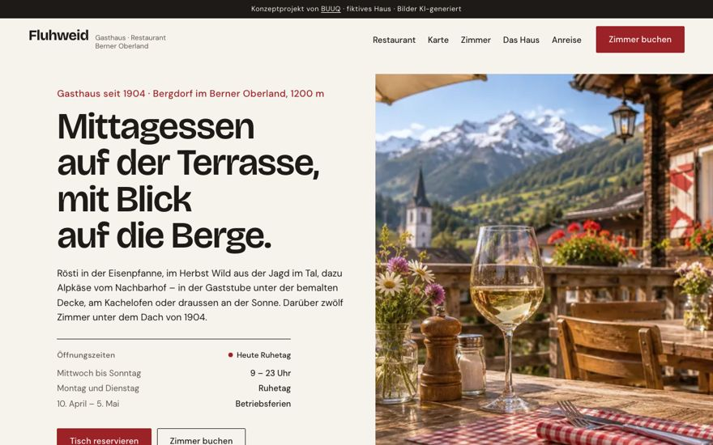
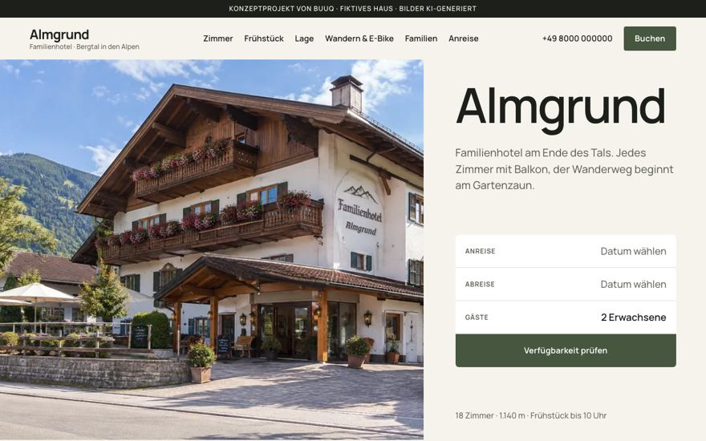
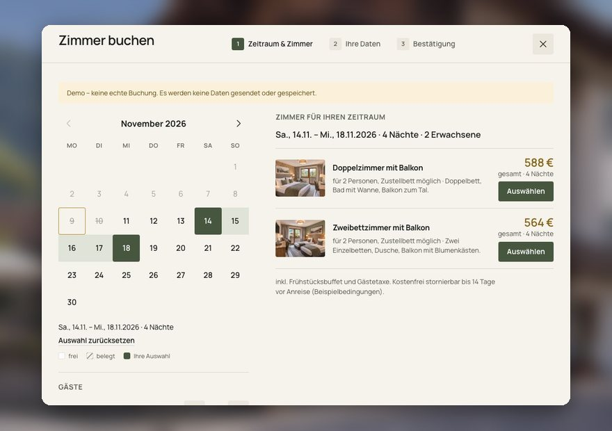

Ratgeber · Hotels
Warum Gäste nicht auf der Hotel-Website buchen — und wie Sie das ändern
Zwischen der Hotel-Website und dem Portal entscheidet sich der Gast oft fürs Portal — weil es dort bequemer ist. Keine langen Formulare, freie Termine sofort sichtbar, gewohnte Oberfläche: Der Gast spart Zeit. Gehen wir die größten Ängste und Sorgen Ihrer potenziellen Gäste durch — und wie Sie erreichen, dass bei Ihnen gebucht wird.
Fünf Gründe, warum der Gast zum Portal geht
- 1
Dort geht es schneller und bequemer. Weniger Felder, Termine in zwei Klicks prüfbar, alles vertraut. Der Gast will sich nicht in ein fremdes Formular einarbeiten — er will den Urlaub an einem Abend klären.
- 2
Es gibt keinen Grund, auf der Website zu buchen. Wenn Sie den Gast nicht anstoßen — etwa mit Direktbucher-Rabatt oder Bonus —, gibt es keinen Anlass, die Gewohnheit zu ändern. Ohne Anlass bleibt der Gast bei seiner Gewohnheit.
- 3
Keine aktuellen freien Termine sichtbar. Kein Gast schreibt eine E-Mail und wartet auf Antwort, um zu erfahren, ob ein Zimmer frei ist: Während Sie antworten, hat er woanders gebucht.
- 4
Die Website wirkt nicht vertrauenswürdig. Ein Design „aus den 2000ern“ schreckt ab: Einer unmodernen, unbequemen Website vertraut niemand seine Kartendaten an. Der Zustand der Website liest sich als Zustand des Hauses.
- 5
Der Gast ist nicht sicher, ob sofort bestätigt wird. Er denkt: „Wenn die Buchung hängen bleibt, muss ich mich hinterher damit herumschlagen — und mein Urlaub ist womöglich ruiniert.“ Auf dem Portal kommt die Bestätigung eine Sekunde später — das nimmt die Angst.
Das ist keine Theorie. Im Oktober 2026 haben wir 28 Websites von Hotels und Gästehäusern in Deutschland, der Schweiz und Österreich auditiert:
— bei 26 von 28 kann man auf der Website nicht online buchen und keine freien Termine mit Preis sehen; bei der Hälfte davon gibt es zwar einen „Buchen“-Button — er führt aber in ein langes Formular, auf eine leere Seite oder direkt zu Booking.com;
— bei 14 von 28 ist der Preis für die eigenen Termine nicht herauszufinden: keine Preise, nur PDF oder nur „ab …“;
— bei 22 von 28 steht keine einzige Bewertung auf der Website — bei 8,3–9,6 und Hunderten Bewertungen auf Booking;
— bei 16 von 28 führt Google den Gast, der das Hotel beim Namen sucht, zu den Portalen.
Ein bezeichnendes Beispiel aus einem Audit: Im Menü gibt es den Punkt „Online Buchung“ — auf der Seite aber weder Kalender noch Formular. Nur eine Überschrift und Kontakte.
Erkennen Sie Ihr Haus wieder? Ein solches Audit machen wir für Ihre Website kostenlos — mit konkreten Punkten statt allgemeiner Ratschläge.
Fünf Schritte, damit bei Ihnen gebucht wird
- 1
Klar getrennte Zimmerkategorien. Visuell leichter Text: Symbole und Struktur statt Textwüste. Der Gast versteht in Sekunden, was „Komfort“ von „Standard“ unterscheidet. → Punkt 1 auf der Karte unten
- 2
Ein System mit aktuellen Preisen und Terminen. Der Gast sieht, was frei ist und was es kostet — wie auf dem Portal. Das räumt die größte praktische Hürde aus. → Punkt 2 auf der Karte unten
- 3
Eine moderne Website mit Buchung in minimalen Schritten — besonders am Handy. Jeder zusätzliche Bildschirm zwischen „ich will“ und „gebucht“ kostet Buchungen. → Punkt 3 auf der Karte unten
- 4
Antworten Sie auf die Angst, sobald sie entsteht. Der Gast fürchtet, die Buchung bleibt hängen? Direkt bei der Zimmerwahl steht: „Sofortige Bestätigung Ihrer Buchung“. → Punkt 4 auf der Karte unten
- 5
Machen Sie die Direktbuchung attraktiv. Ein besserer Preis als auf dem Portal — oder ein Bonus, der das Haus wenig kostet und dem Gast viel wert ist. Ideen: „Direktbucher-Vorteile“. → Punkt 5 auf der Karte unten
So sieht die richtige Zimmerkarte aus
Alle fünf Schritte passen auf eine Karte. Hier ist die Referenz — genau so sollte der Gast ein Zimmer auf Ihrer Website sehen:

Referenzkarte eines Zimmers. Die Markierungen 1–5 neben der Karte sind die Punkte der fünf Schritte oben — sie gehören nicht zum Design.
- 1Kategorien in Sekunden lesbarSymbole und Struktur statt Textwüste
- 2Termine und Preis sofortfrei oder nicht — ohne E-Mail und Anruf sichtbar
- 3Buchung mit zwei Klicksein deutlicher Button, minimale Schritte
- 4Die Angst „bleibt hängen“ ist entschärftdie Sofort-Bestätigung steht genau dort, wo der Zweifel entsteht
- 5Der Direktbucher-Vorteil ist benanntbesserer Preis plus Frühstück — gegen den Booking-Tab nebenan
So sehen unsere Konzept-Vorschauen aus
Keine Theorie: Vier Konzeptprojekte, an denen wir genau diese Prinzipien zeigen — zum Durchklicken:

Berggasthaus · KonzeptGasthaus Fluhweid
Tradition ohne Staub: Stube, Speisekarte als Seite, Reservierung mit zwei Klicks.
Ansehen ↗ Seehotel · Konzept
Seehotel · KonzeptHotel Seeweid
Panorama zuerst: der Blick verkauft, die Buchung direkt beim Haus.
Ansehen ↗
Familienhotel · KonzeptFamilienhotel Almgrund
Für Familien gedacht: ehrliche Erwartungen, Anlässe für die Nebensaison.
Ansehen ↗ Wirtshaus · Konzept
Wirtshaus · KonzeptGasthof Lindenquell
Bayerische Wirtshausküche, 14 Zimmer, klare Preise — Buchung ohne Umwege.
Ansehen ↗Häufige Fragen
Welches System zeigt aktuelle Preise und Termine?
Channel-Manager plus Buchungsmodul, synchronisiert mit Booking/Expedia. Welche es gibt und was sie kosten: „Buchungssysteme für Hotels“.
Verliere ich nicht am Direktbucher-Rabatt?
Nein: Nach unseren Audits nimmt Booking bei solchen Häusern 12–18 % pro Nacht. 5–10 % Rabatt oder ein günstiger Bonus kosten weniger — und der Gast bleibt in Ihrer Kartei, die nächste Buchung gewinnen Sie provisionsfrei.
Was lässt sich schnell ändern, ohne die Website neu zu bauen?
Drei Dinge: der Hinweis „Sofortige Bestätigung“ am Buchen-Button, eine Zeile zum Direktbucher-Vorteil und echte Zimmerfotos statt Stockbildern. Das sind Tage, keine Monate. Welche drei Dinge es bei Ihrer Website sind, zeigt unser kostenloses Audit.
Kostenloses Website-Audit für Ihr Haus
Wir prüfen Ihre Website so gründlich wie die 28 Häuser in unserer Statistik — und zeigen, was zuerst zu beheben ist.
- Audit mit konkreten Punkten — keine allgemeinen Ratschläge
- Kostenlose Konzept-Vorschau: so kann Ihre Website aussehen
- 30 Minuten Gespräch — unverbindlich

Weiterlesen
 Auslastung
AuslastungHotelauslastung erhöhen: 6 Hebel, die Sie selbst in der Hand haben
Sechs Hebel von Erwartungen bis Rückkehrer — mit Checkliste.
Lesen → Gästebindung
GästebindungDirektbucher-Vorteile: kosten wenig, wirken viel
Mit Kosten-Nutzen-Tabelle und Auswahl nach Haustyp.
Lesen →ChecklisteWas auf eine Hotel-Website gehört: die komplette Checkliste
Vom ersten Bildschirm bis Impressum — zum Abhaken.
Lesen →
SystemeBuchungssysteme für Hotels: welches wofür — und was es kostet
IBE, Channel-Manager, PMS — mit Preisen und Rechenbeispiel.
Lesen → Immobilien
ImmobilienWebsite für Bauträger: Vertrauen verkaufen, bevor gebaut ist
Renderings, Wohnungsfinder, Baufortschritt, Antworten 24/7.
Lesen → Restaurants
RestaurantsRestaurant-Website: Reservierungen ohne Provision
Speisekarte als Seite, Reservierung mit zwei Klicks.
Lesen →